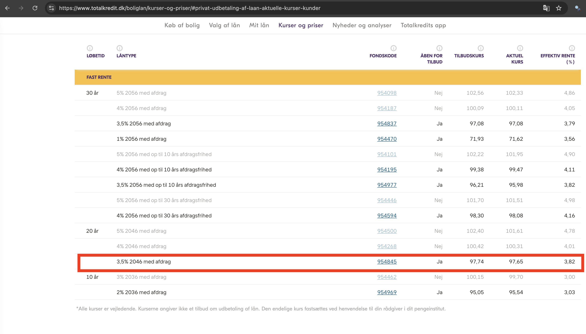
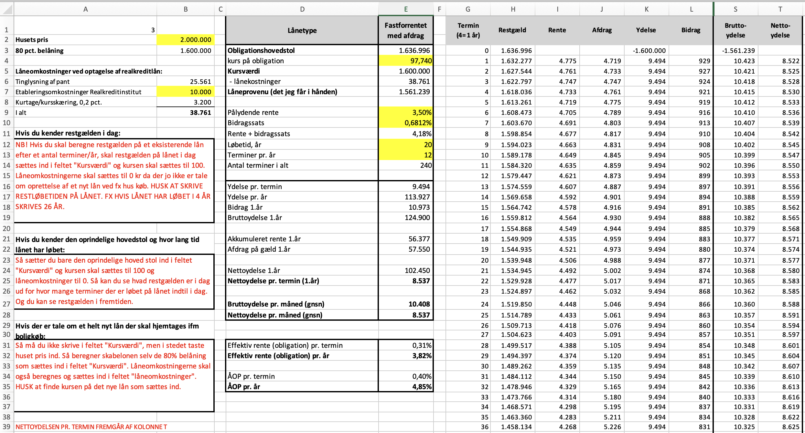
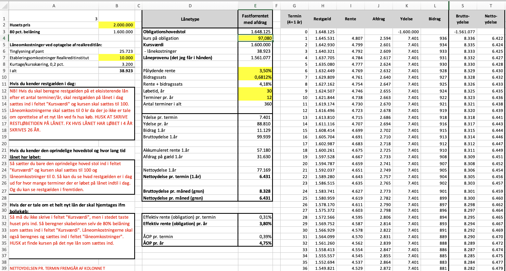
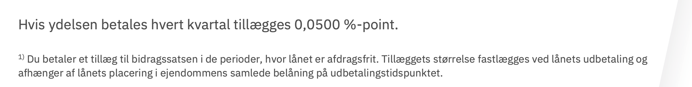

-

Finansiel rådgivning - Privat
Løsningsforslag
Boligfinansiering
Formål:
Rådgivning i forbindelse med Boligfinansiering.
Anslået tidsforbrug:
5 timer
Forudsætning:Materialerne er beskrevet i introen til ugen, herudover kan følgende links være nyttige:
Skatteskabelon
Excel SkatteskabelonenObligationskurser
Realkredit Danmark kurser
Totalkredit kurserPrisblad Realkredit Danmark
Realkredit Danmark Prisblad bidragssatser og gebyrerBidragssatser Mybanker
Bidragssatser Mybanker
Opgave:
Besvar spørgsmålene, upload i Workshop inden deadline.
Feedback:
Du kan se undervisers løsningsforslag og sammenligne med din egen opgave, når du har afleveret din besvarelse og markeret afleveringen som gennemført.
Bemærk Workshop opgaven er ikke obligatorisk, men det anbefales absolut at løse denne.
Oplysninger
Beregning af realkreditlån
Et parcelhus er af realkreditinstituttet vurderet til kr. 2.000.000. til et kommende kundemøde ønskes følgende spørgsmål besvaret.
Spørgsmål
-
Beregn det maksimale realkreditlån på ejendommen
Løsningsforslag:
Man kan maksimalt få 80 % af vurderingen, det vil sige 80 % af kr. 2.000.000 = kr. 1.600.000
-
Lånet optages som et fastforrentet 20-årigt annuitetslån med afdrag i danske kroner hos Realkredit Danmark med månedlige terminer.
Vi tager i det videre udgangspunkt i, at kursværdien af obligationslånet skal være på kr. 1,6 millioner.
Hvilke kuponrenter kan det 20-årige lån fås med? Kan kursen være over 100?
Løsningsforslag:
20-årigt realkredit fås 10. Februar 2025 kl. 14:30 kun med 3,5% kuponrente, kuponrenten er det samme som nominel eller pålydende rente, bemærk kurserne ændrer sig konstant som aktie- eller valutakurser, og opdateres løbende gennem handelsdagen.

Man kan ikke optage lån i obligationer hvor kursen er over 100, man kan se på ovenstående liste fra Realkredit Danmark RD at 4% og 5% serierne er lukkede.
Listen med kurser er hentet i ovenstående link for RD kurser. -
Hvad er bidragssatsen på lånet? Hvad er bidragssatsen egentlig? Hvem får bidraget?
Løsningsforslag:
Bidragssatsen på lånet er jvf. RD's prisblad 0,6812% der er en lille afvigelse i forhold til Mybanker, der angiver 0,6811%, her regner vi med RD's prisblad.
Hvad dækker bidragssatsen?
Bidragssatsen dækker primært to ting:
- Risiko: Realkreditinstituttet løber en risiko ved at låne penge ud. Bidragssatsen er med til at dække denne risiko, hvis låntager ikke kan betale sit lån tilbage.
- Administration: Realkreditinstituttet har administrative omkostninger forbundet med dit lån, f.eks. til udbetaling, administration og inkasso. Bidragssatsen er med til at dække disse omkostninger.
Hvordan beregnes bidragssatsen?
Bidragssatsen er opdelt i forskellige niveauer baseret på din belåningsgrad:
- 0-40% af boligens værdi: Laveste bidragssats.
- 40-60% af boligens værdi: Mellemste bidragssats.
- 60-80% af boligens værdi: Højeste bidragssats.
Jo lavere belåningsgrad, jo lavere bidragssats. Det skyldes, at realkreditinstituttets risiko er lavere, når man har en større del af boligen finansieret selv.
Eksempel:
Hvis man har købt en bolig til 1.000.000 kr. og har en belåningsgrad på 60%. Det betyder, at man har lånt 600.000 kr. af realkreditinstituttet. Hvis bidragssatsen for denne belåningsgrad er 1%, skal man betale 6.000 kr. om året i bidrag.
Der er forskel på bidragssatserne hos de forskellige realkreditinstitutter. Det er derfor en god idé at sammenligne bidragssatserne, inden man vælger et realkreditinstitut. Man kan finde en oversigt over de forskellige realkreditinstitutters bidragssatser på f.eks. Mybanker se link ovenfor.
Man kan ændre bidragssatsen, ved at ændre belåningsgrad. Hvis man f.eks. afdrager sit lån, så belåningsgraden falder, kan man få en lavere bidragssats. Man kan også ændre sin bidragssats, hvis man skifter realkreditinstitut.
-
Hvilke øvrige omkostninger er der ved låneoptagelsen, og hvem betales de til?
Løsningsforslag:
Der er en del forskellige omkostninger i forbindelse med etableringen af realkreditlånet disse er:
- Lånesagsbebyr til kreditforeningen for at ”åbne sagen”
-
Kurtage & kursskæring til kreditforeningen/banken for at sælge obligationerne.
Denne er normalt 0,2 % af kursværdien dog ofte med et maks, individuelt. - Gebyr for tinglysningsekspedition til kreditforeningen, dette er ikke omtalt i lærebogen.
-
Tinglysningsafgift til staten (procentdel på 1,45 % af hovedstolen og en fast del på kr. 1.825) for at få tinglyst lånet, hvorved lånet ”står først” i prioritetsrække-følgen i tingbogen.
Tingbogen viser:
- Adkomst (Hvem ejer ejendommen?)
- Hvornår ejendommen er købt og købesummen
- Byrder (hvilke begrænsninger er der på ejendommen? Det kan for eksempel være servitutter eller lignende.)
- Hæftelser (oplysninger om pantebreve, der giver pant i ejendommen).
- Herudover løbende betaler man en bidragssats som beskrevet tidligere.
-
Man taler ofte om at renten på et fastforrentet obligationslån er fx 4 pct. Er det kuponrenten eller den effektive rente, og hvad er forskellen på disse to renter?
Løsningsforslag:
Kuponrenten er hvad der er trykt på obligationen.
Står der f.eks. 4 pct. betaler man 4 kr. i rente hvis det er en 100 kr.’s obligation.
Men kursen er under kurs 100 og dermed, får man et kurstab (det vil sige mindre udbetalt end de 100 kr).
Den effektive rente er altså højere, når der tagea højde for kurstabet, inkluderes er alle omkostninger ud over bidrag og kurstab er der tale om ÅOP. -
Beregn på baggrund af den fundne kurs i spørgsmål B hovedstolen på lånet det forudsættes der er månedlige afdrag og 20 års løbetid.
Vink: Her kan du benytte fanen ”Byg realkredit beregn restgæld” i skatteskabelonen.
Benyt bidragssatsen fra RD's
Benyt kursen fra RD's hjemmeside
Vi kender ikke de præcise etableringsomkostninger til RD vi sætter disse til 10.000,- kr.
Løsningsforslag:
Hovedstolen bliver 1.636.996 kr.

-
Beregn på baggrund af den fundne kurs i spørgsmål B ÅOP på lånet det forudsættes der er månedlige afdrag og 20 års løbetid.
Vink: Her kan du benytte fanen ”Byg realkredit beregn restgæld” i skatteskabelonen.
Benyt bidragssatsen fra RD's
Benyt kursen fra RD's hjemmeside
Vi kender ikke de præcise etableringsomkostninger til RD vi sætter disse til 10.000,- kr.
Løsningsforslag:
ÅOP bliver 4,85% der tages her højde for renters rente, kurstab og stiftelsesomkostninger. Se Excel billede i forrige spørgsmål. -
Beregn Hovedstol og ÅOP på lånet det forudsættes der er månedlige afdrag og 30 års løbetid.
Vink: Her kan du benytte fanen ”Byg realkredit beregn restgæld” i skatteskabelonen.
Benyt bidragssatsen fra RD's
Benyt kursen fra RD's hjemmeside
Vi kender ikke de præcise etableringsomkostninger til RD vi sætter disse til 10.000,- kr.
Løsningsforslag:
Hovedstolen bliver 1.648.125 kr.
Bemærk kursen og dermed hovedstolen er ændret, men ikke bidragssatsen.

-
Hvad bliver den månedlige besparelse i ydelse ved den 10 år længere løbetid?
Løsningsforslag:
9.494 - 7.401 = 2.093,- kr. pr. måned sparer man i ydelse ved at have 30-årigt lån fremfor et 20-årigt lån. -
Forklar om man sparer noget ved at vælge månedlig ydelse fremfor kvartalsvis.
Vink: Se prisbladet fra RD
Løsningsforslag:
Ja dels sparer man lidt da man betaler en anelse hurtigere så restgælden falder en smule hurtigere.
Derudover vil man betale 0,0500 %-point mere hvis man afdrager kvartalsvis, se nedenstående fra RD's prisblad:

Løsningsforslag Excel
Løsningsforslag Excel